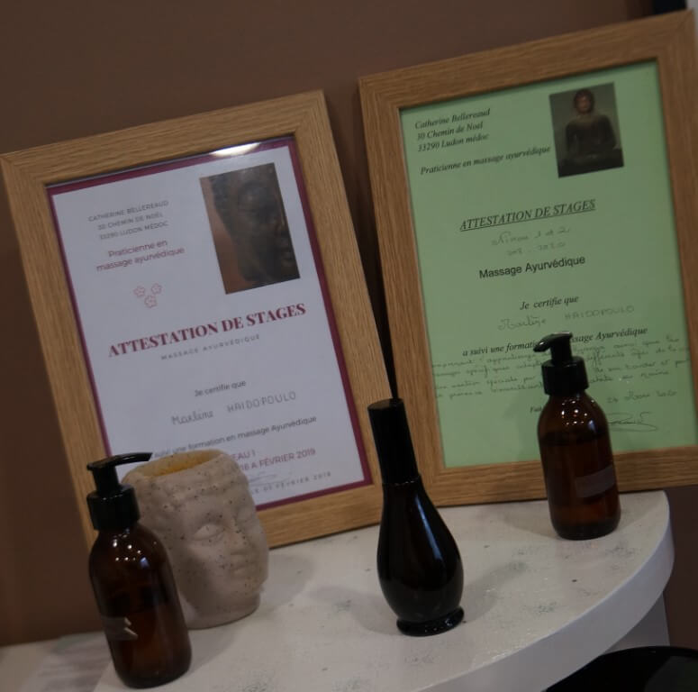

Massage
Ayurvedique
Haïdopoulo
Marlène

Le massage ayurvédique
Est un massage qui prend en charge la globalité psychocorporelle de la personne: il est enveloppant de la tête aux pieds, il réveille l’énergie vitale de chacun, il est unifiant. Le massage ayurvédique harmonise les tempéraments (les doshas): VATA (air), PITTA (feu), KAPHA (terre).
Les bienfaits du massage ayurvédique
L’Ayurvéda représente la connaissance de la vie.
Le massage ayurvédique est un massage humaniste axé sur 3 piliers: le respect, la bienveillance et le non-jugement .
Ses bienfaits sont nombreux. Il permet de:
- Relancer la circulation
- Rééquilibrer le corps
- Améliorer le sommeil
- Stimuler la circulation lymphatique
- Réguler l’appareil digestif
- Renforcer et adoucie la peau
- Eliminer les déchets
Ce massage est toujours commencé par le sacrum (pour les massages arrière du corps et corps complet), il est pratiqué avec des huiles biologiques chaudes.
Attention, ce massage n’a aucune connotation sexuelle.
Massages et tarifs
Massage AANSIK
Massage du dos ou tête et visage ou pieds.
Durée: 30 minutes.
Tarif: 25 euros.
Massage VAAPAS
Massage arrière du corps, dos et jambes.
Durée: 45 minutes.
Tarif: 40 euros.
Massage POORNATA
Massage complet du corps, dos, jambes, ventre, pieds et tête.
Durée: Une heure et 30 minutes.
Tarif: 80 euros.
Massage DAADE MA
Massage « en étoile »: mains, pieds et tête pour personnes âgées sur une chaise.
Durée: 45 minutes.
Tarif: 40 euros.
Massage BACHCHA
Massage enfants de moins de 12 ans.
Durée 30 minutes.
Tarif: 25 euros.
Massage MAKAAN
Massage à domicile dans un rayon de maximum 10 kilometres de Fargues.
Tarif classique + 10 euros de frais de transport.
Qui suis-je?
Marlène Haïdopoulo
Infirmière depuis 1998. Mon parcours m’a amené à travailler dans les blocs opératoires (la technicité) mais je n’ai jamais oublié le relationnel, trop important pour moi.
Je me suis mis au Yoga depuis plus de 7 ans maintenant ce qui a éveillé d’autres sens en moi.
Puis, une ancienne collègue a commencé la formation de massage ayurvédique et s’est entrainée sur moi (quelle chance!). J’ai compris qu’il fallait que je le fasse moi aussi, pour une continuité de prendre soin de l’autre par rapport à mon métier.
J'ai été formée par Catherine Bellereaud en 2018/2019 et fini le 2ème niveau en 2020. 
Ma pratique du massage a toujours été pour le «mieux être» de l’individu comme lorsque je prodigue des soins aux patients.
Participant à des ateliers de DO IN (automassage proche version du Shiatsu) avec Laetitia Lefeuvre (sophrologue et pratiquant des massages chinois), je m’inspire lors de mes massages de cette technique si besoin.
Horraires et coordonnées
Tous les mercredis de 9h à 20h 1 route Bois Menu33370 Fargues-Saint-Hilaire marlene.massage@orange.fr
Tél : 06.67.02.05.44